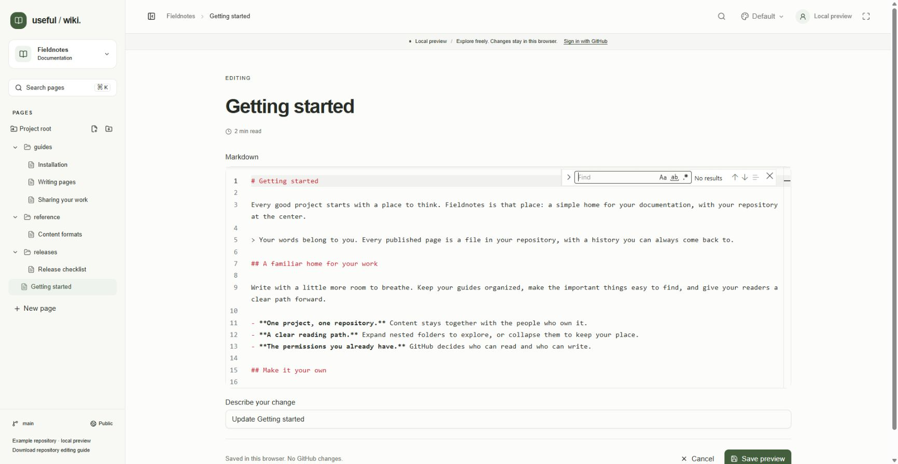

Useful Wiki stores page content in ordinary repository files. Choose HTML for visual editing and layouts, or Markdown for source editing. Older .wiki.json pages remain supported. You can edit the same files with a local editor or coding assistant; there is no second generated JSON copy to keep synchronized.
Click New page, enter a title, and choose Markdown — Monaco editor under Format.
Choose the folder and a .md filename, then click Start writing.
Keep the initial # Your title heading at the top and write the page below it. The first level-one heading supplies the displayed page title; there is no separate title input.
Use Markdown headings, emphasis, links, lists, checklists, fenced code, and tables. See the example below.
Enter Describe your change and choose Save to repository, or press Ctrl/Cmd+S inside the editor. The saved page opens in reading view.
# Team handbook
## Before you begin
- Read the [setup guide](01-getting-started.html).
- [ ] Check your repository access.

| Format | Editor |
| --- | --- |
| HTML | Visual editor |
| Markdown | Monaco source editor |
```sh
git status
```
Keep the title heading at the beginning so reading view can show it once above the article. A page without a level-one heading falls back to a filename-derived title when loaded from the repository.
Local demo: Markdown pages open in Monaco with line numbers and source syntax. The first level-one heading provides the title.
Monaco provides syntax highlighting, line numbers, word wrapping, undo/redo, find/replace, indentation, multiple cursors, line operations, folding, and an F1 command palette. Its native shortcuts remain available, including Ctrl/Cmd+K chords. Ctrl/Cmd+S saves the page. The wiki's search shortcut does not override typing or Monaco commands while source editing.
Markdown editing is a source-only view: there is no split preview or rich-text toolbar. Save to review the rendered result. Visual image-upload, columns, and content-tab controls do not appear here. Add images to the repository and reference them with Markdown syntax. The reading view supports GitHub-flavored tables, strikethrough, and task lists; change checklist state in source when editing.
Monaco and its worker are bundled with the app. A plain text editor remains available while it loads or if loading fails, so you can still edit and save. Editor colors follow your appearance preference without changing the stored Markdown.

Local demo: Monaco's Find control searches the current Markdown source. Project-wide page search is a separate action.
Open the saved page in reading view. The copy action uses saved page content, so save edits first.
Click Copy as Markdown near Copy link and Edit page.
When the label changes to Page copied, paste into your editor, notes, or an assistant conversation.
If clipboard access is unavailable, the Copy page dialog opens with Page Markdown selected. Use your normal copy shortcut, then close the dialog.
This action includes the page title and the whole document: all content tabs, every column, code, lists, checklists, tables, and image references. It reads stored document data, so inactive panels are included. It does not embed image bytes or preserve visual font, color, width, or layout styling. Treat it as a content export, not a lossless HTML conversion. Existing Markdown content stays Markdown; the title is added only when needed.

Local demo: Copy as Markdown is available in reading view and includes the saved page's complete content, including hidden tab panels.
Format | Title and content | Use |
|---|---|---|
| HTML title metadata and a supported HTML body. | Visual editing with rich text, tables, images, code, columns, and tabs. New pages use .html. |
| First level-one heading and Markdown source. | Monaco source editing and rendered reading. New pages use .md. |
| A version-1 object containing title and a Tiptap document tree. | Existing rich documents remain readable and visually editable. The new-page dialog does not create this format. |
Choosing a format is part of new-page creation. There is no in-place format-conversion menu. Renaming a JSON file to .html does not convert its contents. For conversion, create a correctly structured new file and review the result before replacing the old page.
<!DOCTYPE html>
<html lang="en">
<head>
<meta charset="utf-8">
<meta name="useful-wiki-format" content="1">
<title>Example page</title>
</head>
<body>
<p>A page with a <a href="01-getting-started.html">relative link</a>.</p>
</body>
</html>
Version-1 HTML uses UTF-8, a title of 1–200 characters, and supported body elements. The current visual editor supports Heading 1 through Heading 6. Preserve layout data-* attributes, styles, table cell dimensions, tab labels and fallback headings, image alternative text, and whitespace inside code blocks when making source edits.
Use relative page and image paths. Do not write session-bound /api/projects/… image URLs into repository files. Columns use semantic column containers; tabs export every panel as a labeled section. A plain HTML viewer can retain the content without embedded app scripts, although interactive tab behavior belongs to Useful Wiki's reader.
Useful Wiki is a document editor, not an arbitrary website host. Scripts, iframes, forms, executable embeds, and external stylesheets are unsupported. HTML is sanitized and normalized to the editor's document schema, so an HTML round trip preserves meaning rather than exact source bytes. Each page is limited to 700,000 bytes.
At the bottom of the project sidebar, click Download repository editing guide. It downloads USEFUL_WIKI.md, a text guide for people and coding assistants explaining file structure, columns, tabs, images, checklists, older formats, and safe work alongside the browser editor. This is a format reference, not an export of your project's pages.
Follow Editing from your repository for the complete contributor workflow. Commit on the configured branch, reload Useful Wiki to review changes, and reconcile any concurrent browser draft instead of overwriting a newer revision.